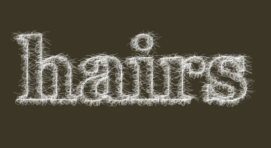
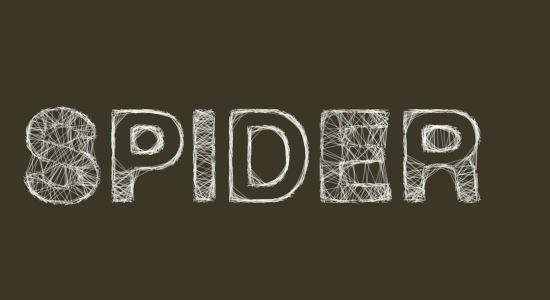
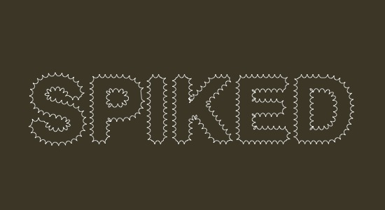

In analogy to filter effects that manipulate pixels in an image, PlotDevice provides the path mathematics to create filter effects that manipulate vector curves. Below is some example code.
Hairs
A path filter that grows hair on each point in a contour. We measure the length of each contour and then calculate a number of points on it, based on the length (so longer segments will get more hairs and shorter segments will get less). On each point we draw some wiggly curves.

size(550, 300) background(0.23, 0.21, 0.15) font("Georgia-Bold", 175) path = textpath("hairs", 40, 200) for contour in path.contours: prev = None n = contour.length for pt in contour.points(int(n)): nofill() stroke(1, 0.75) strokewidth(random(0.25, 0.5)) if prev != None: autoclosepath(False) beginpath(prev.x, prev.y) curveto( pt.ctrl1.x - random(30), pt.ctrl1.y, pt.ctrl2.x, pt.ctrl2.y + random(30), pt.x, pt.y ) curveto( pt.ctrl1.x + random(10), pt.ctrl1.y, pt.ctrl2.x, pt.ctrl2.y - random(10), pt.x + random(-20, 20), pt.y + random(-10, 10) ) endpath() prev = pt
Spider
A path filter that weaves a web between the points in each contour. Depending on the length of a contour, a number of points are calculated along the contour. Then points are connected randomly with straight lines (as long as the distance between them is smaller than some given number, fontsize() / 5 in this case).

from math import sqrt size(550, 300) background(0.23, 0.21, 0.15) font("Helvetica-Bold", 125) path = textpath("SPIDER", 20, 200) m = 2.0 for contour in path.contours: n = contour.length + 50 points = list(contour.points(n)) for i in range(int(n)): pt1 = choice(points) d = float("inf") while d > fontsize()/5: pt2 = choice(points) d = sqrt((pt2.x-pt1.x)**2 + (pt2.y-pt1.y)**2) nofill() stroke(1, 1, 1, 0.9) strokewidth(0.35) line( pt1.x + random(-m, m), pt1.y + random(-m, m), pt2.x + random(-m, m), pt2.y + random(-m, m) )
Draft
A path filter that sketches a piece of text by drawing different layers of (gradually optimizing) paths on top of each other. For each contour a number of points are calculated. Two points are roughly connected by a straight line. The connection gets more accurate as more layers are drawn.
size(550, 300) background(0.23, 0.21, 0.15) font("Georgia-Bold", 175) path = textpath("draft", 40, 200) m = 15 for i in range(m): m -= 1 for contour in path.contours: prev = None n = contour.length for pt in contour.points(n/80*i): nofill() stroke(1, 0.75) strokewidth(0.25) if prev != None: line( pt.x, pt.y, prev.x + random(-m, 0), prev.y + random(-m, 0) ) line( pt.x + random(-m, 0), pt.y + random(-m, 0), prev.x, prev.y ) prev = pt
Spiked
A path filter that draws perpendicular spikes along each contour. A spike is calculated from the angle between to consecutive points. Subtracting 90 degrees from this angle gives us the perpendicular angle jutting outwards from the curve. We then find the point halfway between the starting and ending point and push it upwards. If we connect a curve from the starting point to this point, and a curve from this point to the ending point, we get a spike connecting the two.

from math import degrees, atan2 from math import sqrt, pow from math import radians, sin, cos size(550, 300) background(0.23, 0.21, 0.15) font("Helvetica-Bold", 125) path = textpath("SPIKED", 40, 200) m = 5 # spike length c = 0.8 # spike curvature # From the PlotDevice math tutorial: def angle(x0, y0, x1, y1): return degrees( atan2(y1-y0, x1-x0) ) def distance(x0, y0, x1, y1): return sqrt(pow(x1-x0, 2) + pow(y1-y0, 2)) def coordinates(x0, y0, distance, angle): x1 = x0 + cos(radians(angle)) * distance y1 = y0 + sin(radians(angle)) * distance return x1, y1 # The "spike" function between two points. def perpendicular_curve(pt0, pt1, curvature=0.8): d = distance(pt0.x, pt0.y, pt1.x, pt1.y) a = angle(pt0.x, pt0.y, pt1.x, pt1.y) mid = Point( pt0.x + (pt1.x-pt0.x) * 0.5, pt0.y + (pt1.y-pt0.y) * 0.5 ) dx, dy = coordinates(mid.x, mid.y, m, a-90) vx = pt0.x + (mid.x-pt0.x) * curvature vy = pt0.y + (mid.y-pt0.y) * curvature curveto(vx, vy, dx, dy, dx, dy) vx = pt1.x + (mid.x-pt1.x) * curvature vy = pt1.y + (mid.y-pt1.y) * curvature curveto(dx, dy, vx, vy, pt1.x, pt1.y) for contour in path.contours: prev = None n = contour.length / 8 for pt in contour.points(n): nofill() stroke(1) strokewidth(0.75) if not prev: beginpath(pt.x, pt.y) elif pt.cmd == MOVETO: moveto(pt.x, pt.y) else: perpendicular_curve(prev, pt, c) prev = pt endpath()
Trashed
A path filter that trashes the path by inserting random line segments between two points.

size(550, 300) background(0.23, 0.21, 0.15) font("Georgia-Bold", 175) path = textpath("trash", 40, 200) def trash(path, pt0, pt1, m=0.2, n=20, d=3.0): # Add trash between two points. # m: controls how much of the path is trashed. # n: the number of lines to insert. # d: the maximum length of inserted lines. if random() < m: for i in range(random(n)): pt0.x += random(-d, d) pt0.y += random(-d, d) path.lineto(pt0.x, pt0.y) path.lineto(pt1.x, pt1.y) # Create a blot/speckle near the current point. # We have to add this to the path at the end. if random() < m*0.3: x = pt1.x - random(-d*4, d*4) y = pt1.y - random(-d*2, d*2) blot = BezierPath() blot.moveto(x, y) for i in range(random(n)): x += random(-d, d) y += random(-d, d) blot.lineto(x, y) blot.closepath() return blot p = BezierPath() extensions = [] for contour in path.contours: prev = None n = contour.length / 8 for pt in contour.points(n): if not prev: p.moveto(pt.x, pt.y) elif pt.cmd == MOVETO: p.moveto(pt.x, pt.y) else: blot = trash(p, prev, pt) if blot: extensions.append(blot) prev = pt for blot in extensions: p.extend(blot) fill(1) nostroke() drawpath(p)